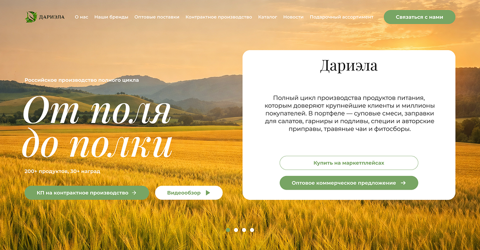
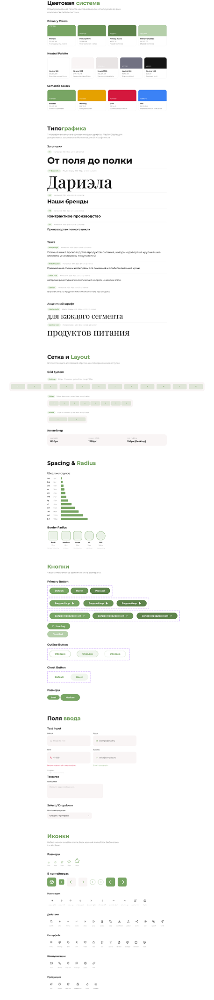
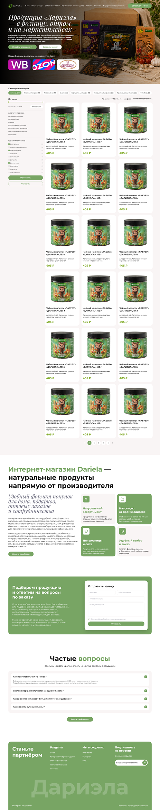
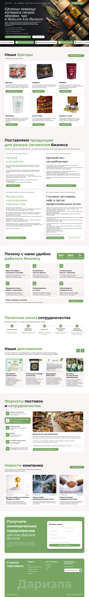

Dariela — Food Manufacturer: Redesign & Platform Expansion

A 3‑page website for a company with two completely different types of buyers
Dariela is a full‑cycle food manufacturer producing soups, spices, teas, and garnishes under 6 own brands (Дариела, Шафран, Яготка, Матрона, Самобранка, and others). Products are sold both retail (online store, marketplaces WB / Ozon / Яндекс.Маркет) and wholesale to businesses (HoReCa, distributors, retail chains including Магнит and ВкусВилл).
The site had three pages: homepage, catalog, and product card — all outdated. Users couldn't identify primary CTAs, got lost in the interface, and couldn't complete target actions. The B2B direction — the company's key revenue stream — had no dedicated entry point anywhere on the site.
Hero reframed around the business model, not the product image
The new hero leads with "От поля до полки" — the company's full‑cycle manufacturing proposition. Brands, marketplace presence, and B2B entry points are all visible above the fold.
Two audiences — one site with no path for either
Two completely different user types arrived on the same pages: B2C retail buyers choosing a product for home, and B2B procurement managers evaluating wholesale terms or contract manufacturing capabilities. The old site had no separation — both audiences landed on retail‑focused pages with no path to a B2B application, no trust signals for business clients, and no pages explaining cooperation formats.
Two separate user journeys built into one architecture
B2C entry — organic search or marketplace listing brings retail buyer to the site
B2C browse — catalog with filters, product card with tabs and buy options
B2C convert — add to cart or go to WB / Ozon / Яндекс.Маркет
B2B entry — business client arrives looking for wholesale or production partner
B2B evaluate — dedicated landing explains formats, segments, terms, certifications
B2B convert — application form or commercial offer request
The architecture had to serve both journeys without making either audience feel they landed on the wrong site.
Navigation rebuilt around two entry points — not one
The old navigation had no B2B sections. Wholesale and contract manufacturing — two separate business directions — were invisible to the visitor. There were no pages for delivery conditions, certificates, contacts, or company information.
Main navigation expanded to: About · Our brands · Wholesale supplies · Contract manufacturing · Catalog · News · Gift assortment. B2B directions got standalone landing pages. B2C path leads through catalog → product card → purchase.


Design system built from scratch before any page was drawn
With 10+ page types to design, starting without a system would have created visual inconsistency and slowed down production. The system was built first: color palette, typography scale, grid, spacing, and 20+ components covering all interface states.
Primary green (brand), supporting greens, neutral grays, status colors (red, orange, yellow)
Display serif for hero statements, bold sans‑serif for headings, regular sans for body — three‑level hierarchy
Buttons (5 states), input fields, product cards, filter sidebar, tabs, modals, notifications, breadcrumbs, FAQ accordion, achievement cards, news cards, forms
Existing pages — completely rethought, not reskinned
All three pages existed but failed on usability — each was redesigned with clear hierarchy, explicit CTAs, and integration of new system components.
Catalog with filters and marketplace integration — retail and wholesale in one view
Left sidebar filters by category, brand, and price. Product grid with 3 columns. Each card shows price, add‑to‑cart, and availability on marketplaces. B2B wholesale CTA placed below the grid — visible after browsing, not competing with retail flow.


Product card serves B2C buyers and B2B buyers simultaneously
Image gallery, price, add‑to‑cart and "Buy now" buttons. Direct links to WB / Ozon / Яндекс.Маркет. Four content tabs: Description · Preparation method · Ingredients · Supply conditions. The "Supply conditions" tab serves B2B buyers without interrupting the retail purchase flow.
B2B had no digital presence — two dedicated landings built from scratch
Wholesale supplies and contract manufacturing are separate business directions with different audiences, different decision‑making processes, and different trust requirements. Each received a standalone landing page.
Segmented by buyer type — each segment gets its own argument
The page segments B2B buyers: small and medium wholesale, large wholesale / distributors, federal and regional retail chains, HoReCa and professional kitchens. Each segment has its own value proposition block. Cooperation scheme shown as a step‑by‑step flow. Application form at the bottom.


"Your brand. Our production." — a standalone landing for OEM clients
Contract manufacturing page explains the full cycle: recipe development → raw materials → production → packaging → logistics. Product categories available for OEM release, cooperation formats (by recipe, by TU), certifications (HACCP, ЕАЭС), and client reviews.
5 informational pages that B2B clients expect to find — and couldn't before
For B2B buyers, missing informational pages = missing trust. No delivery terms, no certificates, no contacts with legal details — each absence is a reason to choose a competitor.
Full‑cycle manufacturer story, brand portfolio 2026 (6 brands), company values, major retail clients (Магнит, ВкусВилл, etc.), quality control system.
Blog with category filters: company news, product updates, industry events. Articles support SEO and demonstrate active presence in the industry.
Split by buyer type: individuals (online payment, cash on delivery, pickup) and legal entities (invoice, VAT / non‑VAT, installment). Pickup locations with maps. Delivery partners: СДЭК, ПЭК, Почта России.
Filterable gallery: certificates of conformity, HACCP award, ЕАЭС declarations, diplomas. Downloadable copies. Critical for B2B procurement compliance.
Legal details (ИНН, ОГРН), address with map, phone, email, Telegram. Application form. Marketplace links.


What shaped the decisions
Serving two completely different audiences on the same domain without making either feel they're on the wrong site
B2B trust requirements (certifications, legal details, terms) had to coexist with B2C simplicity and emotional product photography
10+ page types to design with visual consistency — required building the design system before any page design
Site expanded from 3 to 10+ page types — all directions of the business are now represented online.
B2B wholesale and contract manufacturing received 2 dedicated landing pages with segmented value propositions and application forms.
Delivery, certificates, contacts, and about — 4 trust‑critical pages that B2B buyers require before making contact — added from scratch.
Full design system built covering 20+ components for consistent scaling of future pages.
"The main challenge wasn't designing 10 pages — it was figuring out how to make a single site serve two audiences with fundamentally different needs without creating two separate websites. The solution was architecture‑first: clear navigation separation, dedicated B2B landings, and a product card that speaks to both buyer types through tabs."